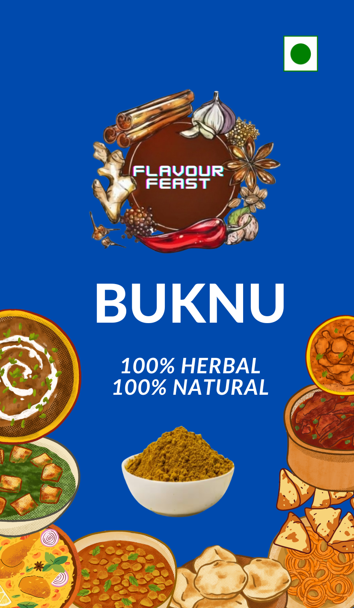

Buknu
Buknu, a remarkable blend of tradition, health, and taste. Rooted in a more than 100-year-old Ayurvedic recipe, Buknu is the perfect embodiment of nature's goodness. Buknu is more than just a spice; it's a time-tested elixir that promotes well-being in every bite. Crafted from 100% herbal and 100% natural ingredients, this extraordinary blend offers a multitude of benefits for your health and taste buds.
Benefits:
- 1) Bone Health: Buknu contains essential minerals that contribute to bone strength and resilience, ensuring you maintain a solid foundation for a vibrant life.
- 2) Digestive Delight: Our Ayurvedic recipe includes ingredients known to aid digestion, promoting a happy and harmonious stomach after every meal.
- 3) Vitamin C Boost: Embrace the power of Vitamin C, a vital nutrient for overall health, readily available in every pinch of Buknu.
- 4) Gentle Stomach Cleansing: Buknu's natural composition supports gentle stomach cleansing, helping you feel light, refreshed, and ready to conquer your day.
- Shelf life: 3 years +
RS 79